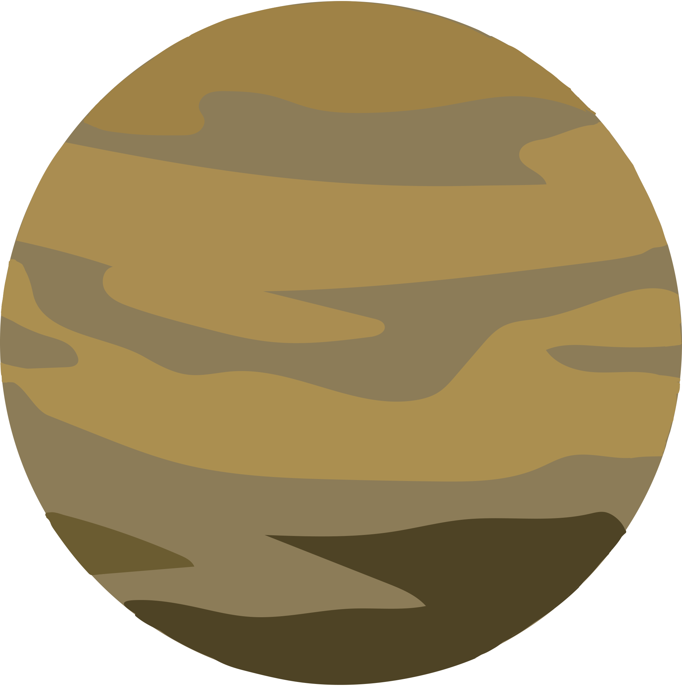

Venus

Intro
Second planet from the Sun and our closest planetary neighbor, Venus is similar in structure and size to Earth, but it is now a very different world. Venus spins slowly in the opposite direction most planets do. Its thick atmosphere traps heat in a runaway greenhouse effect, making it the hottest planet in our solar system—with surface temperatures hot enough to melt lead. Glimpses below the clouds reveal volcanoes and deformed mountains.Fun Facts
- Super Rotating Atmosphere: While the surface rotates slowly, the winds blow at hurricane force, sending clouds completely around the planet every five days.
- Water on Venus: Many scientists believe water once existed on the surface. Future Venus explorers will search for evidence of an ancient ocean.
- Many Visitors: More than 40 spacecraft have explored Venus. The ‘90s Magellan mission mapped the planet's surface and Akatsuki is currently orbiting Venus.
Next
Back